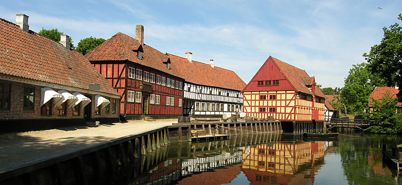
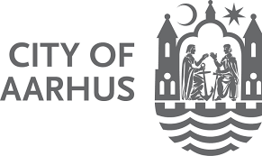

| Stato | Regione | Abitanti | Densità |
|---|---|---|---|
| Danimarca | Jutland Centrale | 273077 | 3000,85 ab/km^2 |
Se vuoi visitare il sito del comune della città clicca qui
Il vescovado di Århus risale almeno al 951, ma ritrovamenti archeologici recenti permettono di retrodatare il sito cittadino al VII secolo, all'inizio dell'epoca vichinga, facendo di Århus una delle più antiche città della Scandinavia . Tra il XIII e il XIV secolo l'insediamento originale subì un notevole sviluppo urbanistico trasformandosi in un'importante città commerciale. La sua posizione riparata sulla costa occidentale del Kattegat (il tratto di Mar Baltico compreso tra Svezia e Danimarca), la rendeva (e la rende ancora oggi), infatti, un punto nodale per gli scambi commerciali tra lo Jutland e le isole dell'arcipelago danese, e un importante scalo per le tratte tra la Germania, la Scandinavia e i Paesi Baltici. Dal punto di vista demografico, il suo sviluppo è stato molto più recente: la sua popolazione non superava quella di Randers fino alla fine del XIX secolo e fino agli anni venti del XX secolo, la città più grande della penisola rimaneva Aalborg. La relativamente rapida crescita demografica è stata il frutto delle dinamiche sociali innescate dalla rivoluzione industriale che comportarono un consistente flusso migratorio dalle aree rurali verso le nuove aree industriali urbane come Århus. Århus possiede, a detta di un giornale locale, la peggiore periferia del nord europa. Si possono notare alcuni palazzi popolari con il balcone senza base, senza un minimo di protezione.
 La città è suddivisa nei quartieri di:
A differenza della maggior parte dei musei all'aperto, che rappresentano la vita rurale, Den Gamle By rappresenta, al contrario, la vita cittadina, ed è – come tale – il più antico museo del genere. Nel museo si trovano: un ufficio postale, un ufficio della dogana, una scuola, un teatro, 5 giardini, 10 tra botteghe e drogherie, 26 o 27 fra stanze e cucine e 34 fra officine e laboratori di artigiani. Molti di questi edifici – per lo più con facciate a graticcio – sono aperti al pubblico, che può così visitare le stanze decorate nello stile originale. A fare da “contorno” vi sono poi degli “attori” vestiti con i costumi d'epoca da mercante, fabbro, ecc.
ARoS Aarhus Kunstmuseum è il principale museo d'arte di Aarhus, Danimarca. Fu inaugurato nell'aprile 2004 e nel 2011 sulla copertura venne installata la passerella Your rainbow panorama, opera di Olafur Eliasson. Il museo è stato fondato nel 1859. L'8 aprile 2004 ARoS Aarhus Kunstmuseum ha aperto le sue mostre in un nuovissimo edificio moderno a 10 piani con una superficie totale di 20.700 m² e progettato dallo studio di architettura danese Schmidt Hammer Lassen. ARoS è uno dei più grandi musei d'arte del nord Europa con un totale di 816.468 visitatori nel 2015. Oltre alle grandi gallerie con mostre permanenti e temporanee l'edificio ARoS ospita un negozio di arte, una caffetteria e un ristorante. Il complesso architettonico del museo è stato completato nel 2011, con l'aggiunta dello skywalk circolare di Ólafur Elíasson, rendendolo il secondo museo più visitato in Danimarca dopo il Louisiana Museum.